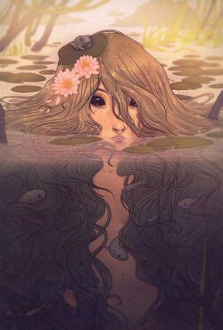

Nix (singular: Neck; feminine: Nixie) are spirits who dwell in quiet rivers and lakes in England, Germany, and Scandinavia. Their love of water is equaled only by their love of music, and their beautiful songs often draw listeners to the banks of their watery homes.
Each culture has its own take on the Nix’s appearance, and the creatures themselves can’t seem to settle on one appearance either. They are avid shapeshifters and may appear as humans, merpeople, snakes, fish, sunken treasures, or horses. In human form, they usually have an elegant appearance, although their features might hint at their wilder natures. Their ears and eyes are sharper than usual, and their hair and skin might be tinted with green or blue. In more extreme cases, they can have gills, bulbous eyes, and webbed hands and feet. Their garments, though stylish, are chronically wet around the hems. When they take the form of horses, they are pure white or apple-grey. Though they are far more beautiful than average horses, they still bear telltale signs of their true nature, having manes full of river weeds or constantly dripping water.
In some tales, Nix appear as dangerous villains. In others, they are wise teachers, and in others still, they are romantic figures. When Nix take a villainous bent, they usually have seductive qualities. With music or beauty, they lure humans closer and closer to the water’s edge. At last, they grab their victims and drown them in the water. When they accept humans as students instead of victims, they can impart wonderful musical abilities. Usually, they require payment for their lessons. A black animal, a gift of alcohol or tobacco, or a beautiful maiden can buy a Neck’s time. At the onset of the Romantic Era, Nix emerged as potential lovers for human beings. Both Nix and Nixie can fall in love with humans. When they do, the humans can rarely resist returning their feelings. After all, these magical water spirits are both beautiful and spectacular at serenading their lovers. Most Nix-human relationships come to a bittersweet end, however. The Neck or Nixie can’t bear separation from its watery home and returns to life there, despite being deeply devoted to its human partner. Eventually, after Catholicism took hold, the Nix personality was deepened by their desire for Christian redemption and an immortal soul. Their music was said to bemoan the fact that they were shut out of the church, and many people who encountered the mournful spirits were afflicted with heart-rending pity.